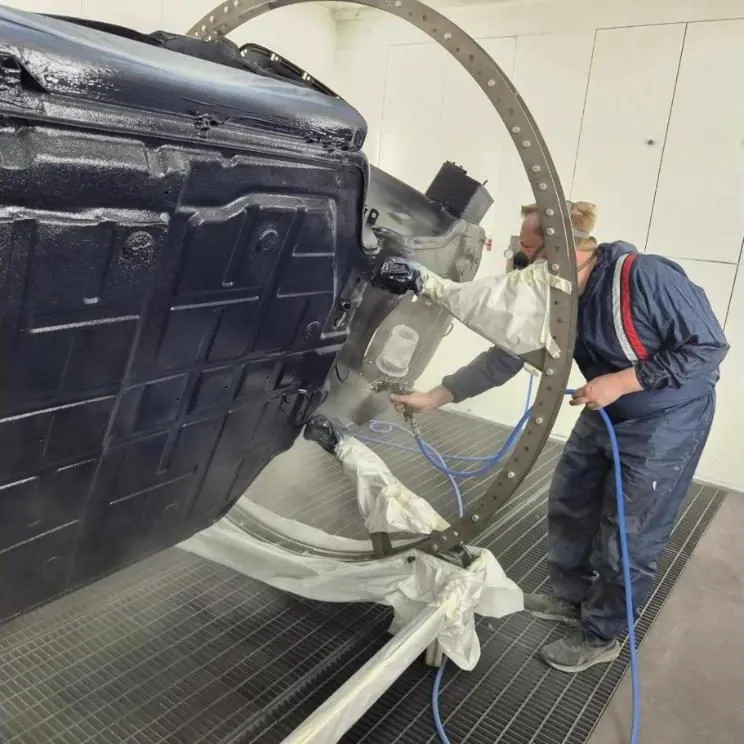
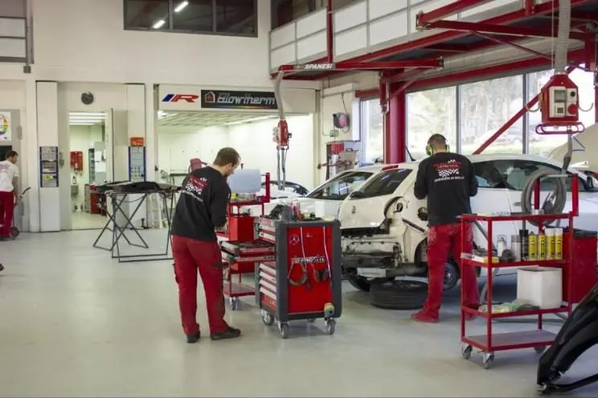

Photo : Sébastien Montagny / Sport-Auto.ch
Carrosserie de Grolley · depuis 2004
Votre voiture mérite un vrai atelier.
Réparation toutes marques, peinture en cabine, restauration et gardiennage en sous-sol chauffé.
Ou appelez l'atelier : 026 476 06 06
 Fig. 02 — Sous-sol, Grolley
Fig. 02 — Sous-sol, GrolleyGardiennage
Votre voiture hiverne au chaud.
Un sous-sol chauffé, accessible par ascenseur, pour confier votre voiture de sport ou de collection le temps d'un hiver ou d'une année.
- Lieu
- Sous-sol chauffé
- Accès
- Par ascenseur
- Durée
- Du mois à l'année
- Pour
- Sport et collection
- Tarif
- Sur demande
Dossier en cours
Porsche 911, image par image.
Restauration commencée en août 2026 : le chantier est suivi en photos, étape par étape.
- 01
Sur rotissoire
La caisse pivote : chaque recoin devient accessible.
- 02

Masquage
Les zones à protéger sont masquées avant peinture.
- 03

Intérieurs en apprêt
L'habitacle reçoit son apprêt en cabine.
- 04

Soubassement
Peint comme le reste de la caisse, grâce à la rotissoire.


Depuis2004
Notre histoire
Deux frères, un atelier.
« Une même passion, une exigence partagée. »
Fondée en 2004 à Grolley par Richard et Fabrice Winiger, la carrosserie est membre de carrosserie suisse et forme des apprentis. Elle s'agrandit en 2026, avec une nouvelle réception et un showroom.
- 2004Fondation à Grolley
- 2021Tesla Approved Body Shop
- 2026Agrandissement et showroom
Dans les coulisses
L'atelier, au quotidien.


Contact
Parlons de
votre voiture.
Le plus rapide reste le téléphone. Vous pouvez aussi décrire votre demande en ligne.
- UrgenceWhatsApp 079 457 00 37
- AdresseRoute de l'Industrie-Ouest 11, 1772 Grolley
- Lundi à jeudi7 h – 12 h, 13 h 30 – 18 h
- Vendredi7 h – 13 h 30